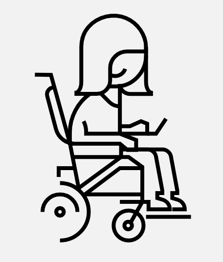

"Accessible design is good design - it benefits people who don't have disabilities as well as people who do. Accessibility is all about removing barriers and providing the benefits of technology for everyone." Steve Ballmer, former chief executive of Microsoft.
Mostly, when it comes to the tech world. People will say “oh yeah, of course accessibility is important; it’s the right thing to do.” However, considering the deadline and budget, the same people will be pulling their hair out saying “look, I’d love to make it work, but given the constraints, we simply can’t accommodate edge cases like accessibility.”
In my opinion, designing with accessibility in mind means being inclusive of everyone. Accessible products are better products for every single user. I'm fascinated with accessibility design, so I wish to use this website to introduce what I learned regarding accessibility design.
